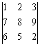
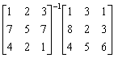
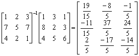
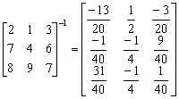
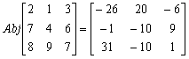

三階逆矩陣乘法、聯立三元一次方程及行列式
程式編寫日期: 2006年4月30日
程式特點:
● 直接計算三階行列式
● 計算聯立三元一次方程
● 計算一個三階逆矩陣與一個3×n 矩陣的乘積，其中 n為整數
● 亦可以計算三階逆矩陣
● 亦可以計算三階伴隨矩陣
程式需要在 REG Quad 模式下執行，因此在輸入程式前請先按 Mode Mode 2 → 3 進入REG Quad模式。
注意: 藍色的英文字為統計模式中的變數(Σx³ 按 Shift 1 → → 1，Σy 按 Shift 1 → 2，Σxy Shift 1 →3)，而 ³√是按shift x³。
程式 (215 bytes)
Stat clear: ?→M: ³√(M - 1 DT: ?→M: 1 , M DT: ?→M:
0 , M - Σy DT: ?→Y: ?→A: ?→B: ?→M: ?→C: ?→D:
³√Y , M ; 0 DT: Lbl 0: Σy→M: ; 1 DT: Σy - M→M: ; -1 DT:
Σx³AD - CBΣx³ + Ans³CΣy + BΣxyM - AMΣy - Ans³DΣxy→X:
?→X: ?→Y: ?→M: (XAD + YCΣy +MΣxyB - MAΣy - CBX - DYΣxy)┘Ans→M◢
; 0 DT: (XB - YΣy + ΣyAns³M - BΣx³M)┘(ΣxyB -AΣy◢
; 0 DT: (ΣxyY - AX + Σx³AM - Ans³ΣxyM)┘(ΣxyB -AΣy◢ Goto 0
例題1: 解聯立方程 :
注意輸入的方法: 先輸入方程式變數的係數，最後才輸入三個常數項
按 Prog 1 再按 1 EXE 1 EXE 1 EXE 1 EXE -1 EXE 2 EXE 1 EXE 3 EXE 1 EXE
(這時顯示?→X及方程組行列式的值 - 2)
6 EXE 5 EXE 10 EXE (顯示x=1) EXE (顯示y=2) EXE (顯示z=3)
計算完結成後，按AC終止程式
例題2: 計算下列的行列式:

按 Prog 1 再按 1 EXE 2 EXE 3 EXE 7 EXE 8 EXE 9 EXE
6 EXE 5 EXE 2 EXE (這時顯示?→X及方程組行列式的值 12)
程式執行完成後，請按AC中止程式。
例題3: 計算

(第一個矩陣，由左至右，上至下輸入)
按 Prog 1 再按 1 EXE 2 EXE 3 EXE 7 EXE 5 EXE 7 EXE 4 EXE 2 EXE 1 EXE
(這時顯示?→X及方程組行列式的值 15)
1 EXE 8 EXE 4 EXE (輸入第二個矩陣，第一欄的數據)
(顯示19/5) EXE (顯示-11/15) EXE (顯示2/5，這三個數值為答案的第一欄)
EXE 3 EXE 2 EXE 5 EXE (輸入第二個矩陣，第二欄的數據)
EXE (顯示-8/5) EXE (顯示37/5) EXE (顯示-17/5，這三個數值為答案的第二欄)
EXE 1 EXE 3 EXE 6 EXE (輸入第二個矩陣，第三欄的數據)
(顯示-1/5) EXE (顯示24/5) EXE (顯示-14/5，這三個數值為答案的第三欄)
程式執行完成後，請按AC中止程式。
所以

注意: 由於統計數據記憶有限，程式有可能在程式執行中途出現Data Full的情況，這時只要再按 EXE 1 (EditOFF) 即可繼續正常操作。
例題4: 計算下列矩陣的逆矩陣。

按 Prog 1 再按 2 EXE 1 EXE 3 EXE 7 EXE 4 EXE 6 EXE
8 EXE 9 EXE 7 EXE (這時顯示?→X及行列式的值 40)
1 EXE 0 EXE 0 EXE (計算逆矩陣第一欄的數值)
(顯示 -13/20) EXE (顯示 -1/40) EXE (顯示 31/40) EXE
0 EXE 1 EXE 0 EXE (計算逆矩陣第二欄的數值)
(顯示 1/2) EXE (顯示 -1/4) EXE (顯示 -1/4) EXE
0 EXE 0 EXE 1 EXE (計算逆矩陣第三欄的數值)
(顯示 -3/20) EXE (顯示 9/40) EXE (顯示 1/40)
因此，

計算完結後按AC終止程式，再按 Mode 1返回正常模式。
注意: 由於統計數據記憶有限，程式有可能在程式執行中途出現Data Full的情況，這時只要再按 EXE 1 (EditOFF) 即可繼續正常操作。
例題5: 計算下列矩陣的伴隨矩陣。
按 Prog 1 再按 2 EXE 1 EXE 3 EXE 7 EXE 4 EXE 6 EXE
8 EXE 9 EXE 7 EXE (這時顯示?→X及行列式的值 40)
Ans EXE 0 EXE 0 EXE (計算伴隨矩陣第一欄的數值)
(顯示 -26) EXE (顯示 -1) EXE (顯示 31) EXE
0 EXE Ans EXE 0 EXE (計算伴隨矩陣第二欄的數值)
(顯示 20) EXE (顯示 -10) EXE (顯示 -10) EXE
0 EXE 0 EXE Ans EXE (計算伴隨矩陣第三欄的數值)
(顯示 -6) EXE (顯示 9) EXE (顯示 1)
因此，

計算完結後按AC終止程式，再按 Mode 1返回正常模式。
注意: 由於統計數據記憶有限，程式有可能在程式執行中途出現Data Full的情況，這時只要再按 EXE 1 (EditOFF) 即可繼續正常操作。
註: 若方程組為 a1x + b1y + c1z = d1 , a2x + b2y + c2z = d2 , a3x + b3y + c3z = d3 或矩陣的係數為 a1, b1, c1, a2, b2, c2, a3, b3及c3，程的限制條件為: b1c2≠b2c1